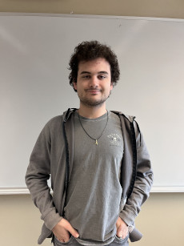
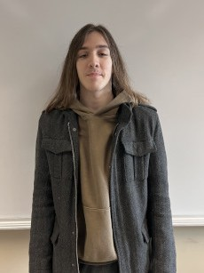
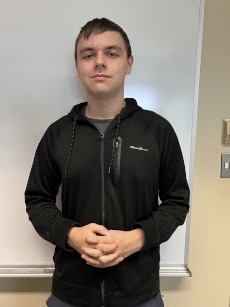

ABOUT US
Our Mission

Here at Puppy Spa & Play, we aim to give each pet a safe and loving home away from home. It is by no means easy to take care of a pet, and may be extra difficult due to personal reasons, which is why we want to help take a load off of your back by expertly grooming your pet and giving them a place to stay with healthy food, lots of socialization, and long walks. The staff here are dedicated to the cause and love animals just as much as we do. See what they have to say about themselves!
Our Staff

John Johnson
John is the incredible manager at Puppy Spa & Play who ensures everything runs smoothly at the establishment. He has been working with animals for 25 years, and 13 of those years have been here. John also owns a beautiful Maine Coon cat by the name of Misty.
James Jameson
James is the main employee in the daycare sector of Puppy Spa & Play. He has been working here since 2014 and is incredibly gentle with every animal he works with. He is incredibly experienced and has a fascination for birds, one of the reasons we've incorporated them into the daycare.
Jerry Jerryson
Jerry is a semi-recent University of Ottawa graduate, responsible for all things grooming after joining the staff in 2019. He loves caring for pets more than he loves his partner, and has a golden retriever dog who he regularly brings to work.
Jeff Jeffson
Jeff works at Puppy Spa & Play as an intern while studying at Heritage College in the Science program. He has loved animals since he was a child and aims to be a veterinary in the future. He works as the main receptionist on weekends and cleans the facility on weekday evenings. No, none of these people are related. No, we do not have a bias to names that start with the letter J.